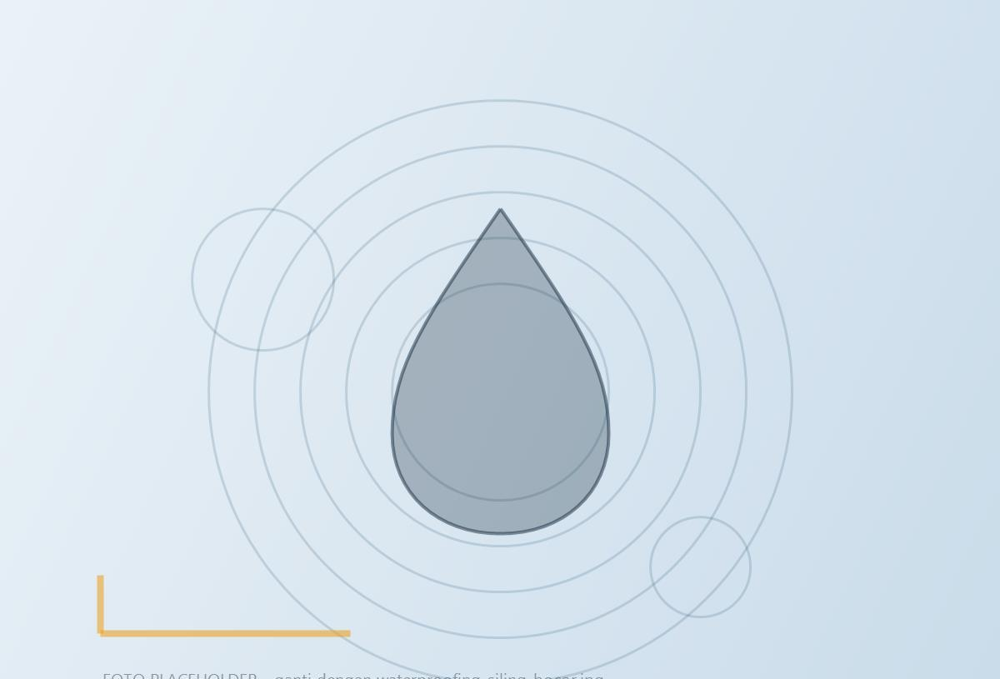

Harga Telus, Tiada Kos Tersembunyi
Tahu kerosakan sebenar sebelum bayar lebih. Setiap bahan, keluasan dan tempoh kerja disenaraikan dalam sebut harga bertulis supaya anda boleh bandingkan dengan tenang.
Pakar Waterproofing · Selangor & KL
Penyelesaian kekal untuk masalah air menitik, dinding berkulat, dan bumbung rosak.
Kenapa pilih Binarumah
Kebocoran bukan sekadar masalah kemasan. Ia merosakkan struktur, membiak kulat, dan menaikkan bil pembaikan jika dibiarkan. Kami selesaikan punca, bukan sekadar kesan.
Tahu kerosakan sebenar sebelum bayar lebih. Setiap bahan, keluasan dan tempoh kerja disenaraikan dalam sebut harga bertulis supaya anda boleh bandingkan dengan tenang.
Penggunaan PU injection, coating gred industri, dan pembaikan struktur yang menangani punca kebocoran — bukan sekadar tampal dan cat semula.
Bukan sekadar tukang rumah biasa, kami menyelesaikan punca utama kebocoran. Pasukan berpengalaman, diselia, dan setiap kerja disertakan jaminan bertulis.
Skop perkhidmatan waterproofing
Dari bumbung hingga bilik air, setiap pembaikan dimulakan dengan pemeriksaan punca. Anda terima cadangan kaedah dan sebut harga sebelum kerja bermula.
Kesan genting pecah, flashing longgar, membrane rosak dan slab retak. Kerja termasuk gantian genting, sapuan membrane dan sealant UV yang tahan cuaca Malaysia.
Suntikan PU dan coating sistem waterproofing tanpa perlu pecah jubin jika keadaan sesuai. Sesuai untuk rembesan ke siling bawah, dinding bilik air dan kawasan kering yang lembap.
Rawatan kulat, sealant elastomerik dan cat sistem waterproofing untuk dinding yang meresap air hujan. Kami juga periksa retak rambut dan sambungan yang menjadi laluan air.
Membrane dan kemasan semula untuk balkoni, car porch dan kanopi yang bocor. Termasuk pembetulan slope dan saliran tersumbat supaya air tidak bertakung.
Tidak pasti kerosakan di mana? Hantar gambar kerosakan melalui WhatsApp untuk pandangan awal.

Pemeriksaan punca
Tompokan lembap, cat menggelembung dan bau hapak bukan masalah kecil. Air yang merebak ke dalam struktur boleh merosakkan kayu, besi dan siling — kos baiki selepas itu jauh lebih tinggi.
Proses kami
Tiada proses berbelit. Anda tahu apa yang berlaku pada setiap peringkat — dari panggilan pertama sehingga kerja siap.
Hantar lokasi dan gambar kerosakan melalui WhatsApp. Kami aturkan waktu lawatan tapak yang sesuai dengan jadual anda.
Kami periksa punca kebocoran sebenar, terangkan pilihan pembaikan, dan serahkan sebut harga bertulis yang jelas sebelum anda membuat keputusan.
Kerja dijalankan mengikut skop yang dipersetujui. Selepas siap, kami semak semula dan serahkan jaminan bertulis Binarumah.
Pakej waterproofing
Pakej bermula RM500. Harga akhir bergantung kepada jenis kerosakan, keluasan dan bahan. Semua item dinyatakan dalam sebut harga bertulis selepas lawatan tapak.
Pakej bermula
RM 500 / pakej
Termasuk lawatan tapak & sebut harga telus. Tiada bayaran sehingga sebut harga dipersetujui.
WhatsApp Untuk Lawatan TapakTanpa obligasi · Sebut harga bertulis
Pasukan kami bergerak ke seluruh Selangor dan KL untuk lawatan tapak serta kerja waterproofing.
Soalan lazim
Jawapan ringkas untuk soalan yang paling kerap kami terima daripada pemilik rumah di Selangor dan KL.
Masih ada soalan? Tanya terus melalui WhatsApp →
Cegah kerosakan struktur dan siling runtuh hari ini. Tempah slot lawatan tapak anda sekarang.